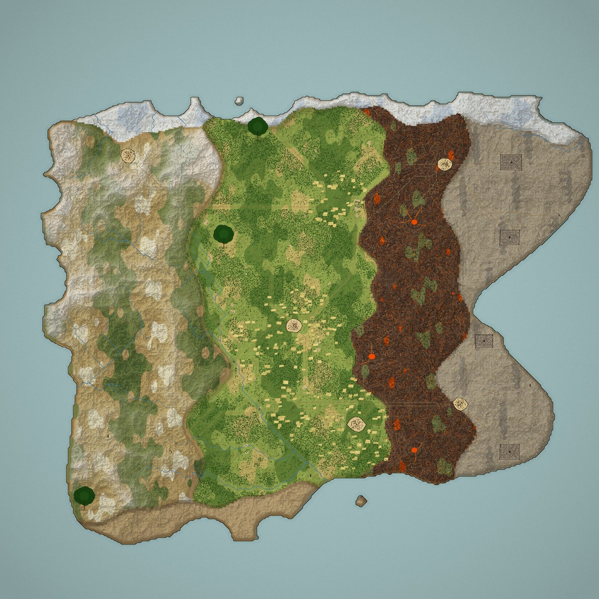
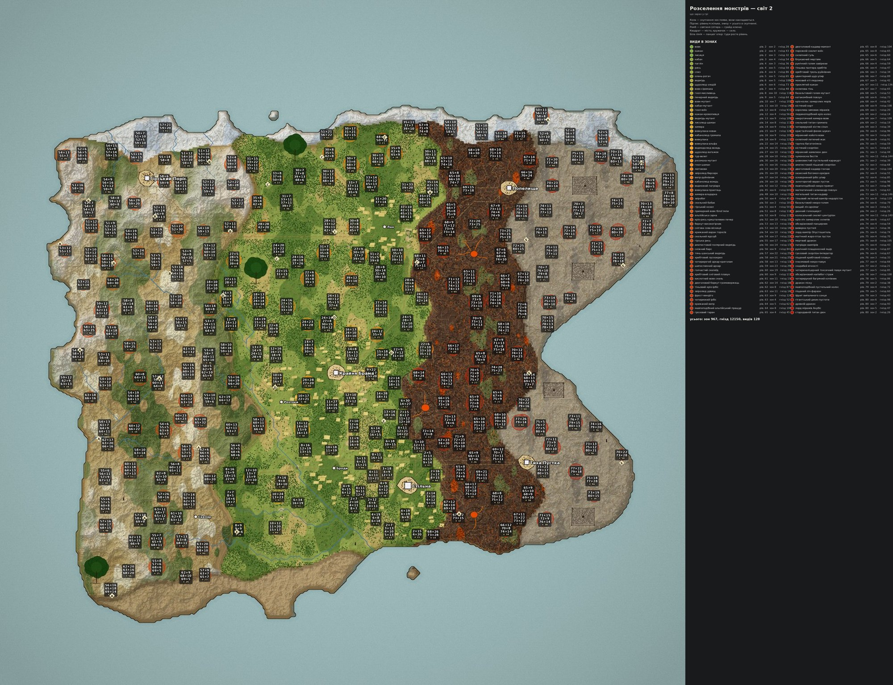

Карта світу
Світ версії 2: один материк, море довкола, п'ять зон, що сильнішають від столиці. Назви міст і сіл тимчасові (П-173).
Завантажити гру
Завантаж апдейтер для своєї системи. Він сам завантажить гру, оновлюватиме її й запустить.
- Розпакуй архів і запусти
MyWay-Updater. - Введи IP сервера:
той, що дав власник. - За бажанням обери теку, куди встановити гру, натисни «Оновити», потім «Грати».
- У грі створи персонажа або зайди наявним.
macOS: апдейтер не підписаний Apple. Першого разу відкрий його через правий клік → «Відкрити» (або «Усе одно відкрити» в «Приватності та безпеці»). Windows: якщо SmartScreen попередить — «Докладніше» → «Усе одно запустити».


tools/rozselennia.py).Зони
| Зона | № | Хто живе | Рівні за опорними містами |
|---|---|---|---|
| Початкова рівнина | 1 | звірі та людиноподібні мутанти-звірі | Стільна 1–10 · Крайня Брама 10–30 · Лан 30–50 |
| Гори заходу | 2 | гірські: яструби, змії, козли, друїди-дерева, їхні мутанти й людиноподібні вище рангом | Гірський Поріг 50–60 · Скеляр 55–70 |
| Попіл | 3 | нечисть: скелети, вампіри та інші | Попелище 65–75 |
| Пустка | 4 | пустельні монстри й дракони | Тиха Пустка 70–80 |
| Південна тераса | 5 | не заселяти — під монстрів S і SS | не заселена |
| Крижана північ | 2 | частина зони 2: крижані звірі, йєті, крижані енти | Гірський Поріг 50–60 · Скеляр 55–70 |
Міста й села
Майстер магії переносить між містами: 250 монет за кілометр по прямій, не менше 300.
| Назва | Що | Від столиці, м | Мешканці |
|---|---|---|---|
| Стільна столиця | місто | 0 | Ліда — крамар, Горан — коваль, Мирон — священик, Зоряна — вартовий, Богдан — гільдмайстер, Ярина — завідувач складу, Юхим — майстер магії |
| Крайня Брама | місто | 1 101 | Остап — крамар, Мальва — коваль, Радим — священик, Квітка — вартовий, Гафія — майстер магії, Одарка — гільдмайстер |
| Гірський Поріг | місто | 3 315 | Терень — гільдмайстер, Улана — завідувач складу, Гнат — крамар, Ружа — коваль, Прокіп — майстер магії, Влас — священик |
| Попелище | місто | 2 586 | Северин — священик, Досія — вартовий, Лаврін — гільдмайстер, Оляна — завідувач складу, Соломія — майстер магії, Химка — крамар, Тарас — коваль |
| Тиха Пустка | місто | 995 | Панас — крамар, Векла — коваль, Тиміш — священик, Наста — вартовий, Кузьма — майстер магії, Марта — гільдмайстер |
| Броди | село | 625 | без мешканців |
| Лан | село | 2 137 | без мешканців |
| Розтоки | село | 1 247 | без мешканців |
| Скеляр | село | 1 763 | без мешканців |
Святині й підземелля
Святиня — вхід у підземелля свого грейду. Відчиняє її ключ святині того ж грейду, що падає з монстрів поруч. Довкола кожної стоїть охорона купками з главарями.
| Грейд | Святинь | Від столиці, м | Рівень монстрів поруч | Вигляд |
|---|---|---|---|---|
| E | 2 | 567–1 455 | 13–14 | дерево, обеліск |
| D | 4 | 1 101–2 180 | 22–28 | камінь, обеліск, руїни, скеля |
| C | 6 | 1 837–2 870 | 31–39 | дерево, камінь, обеліск, руїни, скеля |
| B | 8 | 2 417–3 518 | 48–54 | дерево, камінь, обеліск, руїни, скеля |
| A | 8 | 480–3 221 | 58–68 | дерево, камінь, обеліск, руїни, скеля |
| S | 4 | 1 360–2 530 | 74–75 | дерево, обеліск, руїни, скеля |
| SS | 1 | 3 275–3 275 | 78–78 | камінь |
Орієнтири
Поки що прикраса, не механіка: ні входу, ні здобичі. Що з них зробити — відкрите питання П-220.
| Орієнтир | Від столиці, м | Радіус, м |
|---|---|---|
| некрополь | 2 862 | 104 |
| некрополь | 1 463 | 96 |
| некрополь | 2 274 | 96 |
| некрополь | 1 433 | 88 |
| руїни | 1 635 | 56 |
| руїни | 2 738 | 56 |
| руїни | 1 394 | 56 |
| дерево-велет | 2 184 | 88 |
| дерево-велет | 2 950 | 88 |
| дерево-велет | 2 647 | 88 |
| вулкан | 656 | 80 |
| вулкан | 595 | 72 |
| вулкан | 1 980 | 72 |
| обеліск | 646 | 36 |
| обеліск | 1 673 | 36 |
| обеліск | 2 339 | 36 |
Море
Плавати можна. Повітря вистачає на 25 с, далі вода забирає здоров'я.